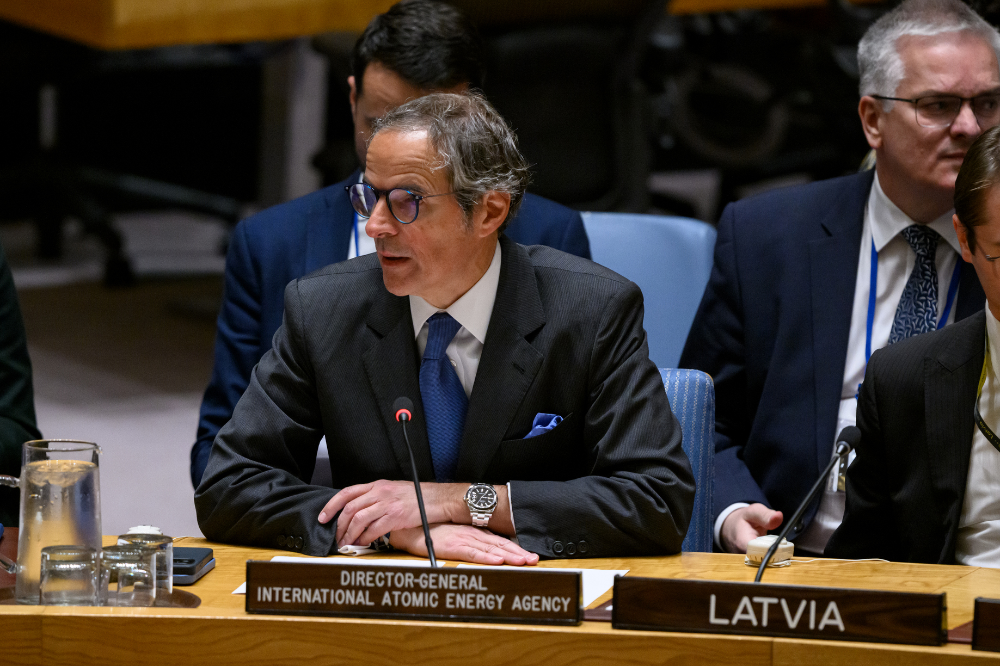

BMT Xavfsizlik Kengashida Eron sanksiyalari bo‘yicha bahs: ovoz berish 11 ga 2
10-sentabr kuni Kengash 1737-qo‘mita faoliyatini muhokama qildi. Rossiya va Xitoy kun tartibiga qarshi ovoz berdi. Buyuk Britaniya 8-sentabr kuni Eronga nisbatan yangi tarmoq cheklovlarini joriy etuvchi hujjatni parlamentga kiritdi.

2026-yil 10-sentabr kuni BMT Xavfsizlik Kengashi Eronning yadro dasturi bo‘yicha 1737-sonli sanksiyalar qo‘mitasi faoliyatini muhokama qildi. Majlis Kengashning 10218-yig‘ilishi sifatida qayd etildi.
Majlis kun tartibi protsedura ovoz berishi orqali qabul qilindi: 11 ta a’zo yoqlab, Rossiya va Xitoy qarshi ovoz berdi; Somali va Pokiston betaraf qoldi.
Bahsning mohiyati
Kengash a’zolari Eronning yadro dasturiga oid sanksiyalar qayta tiklanganmi yoki yo‘qmi degan masalada kelisha olmayapti. Bahs 2025-yilda boshlangan edi: Fransiya, Germaniya va Buyuk Britaniya 2025-yil avgustida “snapback” deb ataluvchi avtomatik tiklash mexanizmini ishga tushirdi.
Shu mexanizm asosida 1737-sonli rezolyutsiya (2006) va boshqa cheklovlar 2025-yil 27-sentabrdan qayta kuchga kirdi deb hisoblanadi.
Xitoy va Rossiya uchlikning huquqiy va protsessual asosiga e’tiroz bildirib, barcha sanksiyalar 2025-yil 18-oktabrda — Qo‘shma har tomonlama harakat rejasi (JCPOA) va 2231-rezolyutsiya muddati tugagan sanada — butunlay bekor qilingan deb hisoblaydi.
Bayonotlar
Faktlar — faktdir. 1737-qo‘mita mavjud.
— AQSh vakili, BMT Xavfsizlik Kengashi (BMT matbuot xizmati tarjimasidan, 10.09.2026)
Eron yadro eskalatsiyasi yo‘lini tanladi.
— Buyuk Britaniya vakili, BMT Xavfsizlik Kengashi (BMT matbuot xizmati tarjimasidan, 10.09.2026)
Rossiya Xavfsizlik Kengashiga sanksiyalar qayta tiklangani haqidagi da’volarni qonuniylashtiruvchi hech qanday qaror qabul qilishiga yo‘l qo‘ymaydi.
— Rossiya Federatsiyasi vakili, BMT Xavfsizlik Kengashi (BMT matbuot xizmati tarjimasidan, 10.09.2026)
Majlisga raislik qilgan Fransiya vakili Eron Xalqaro atom energiyasi agentligi (MAGATE) bilan hamkorlikni to‘xtatganini qayd etdi. Xitoy vakili esa eskalatsiyaning asosiy sababi sifatida AQShning kelishuvdan chiqishi va harbiy harakatlarni ko‘rsatdi.
Raqamlarda
- Majlis sanasi: 10-sentabr 2026 (10218-yig‘ilish)
- Protsedura ovozi: 11 yoqlab, 2 qarshi (Rossiya, Xitoy), 2 betaraf (Somali, Pokiston)
- Snapback ishga tushirilgan: 2025-yil avgust (Fransiya, Germaniya, Buyuk Britaniya)
- Sanksiyalar tiklangan deb hisoblangan sana: 27-sentabr 2025
- Rossiya va Xitoy pozitsiyasi: 18-oktabr 2025 da barcha cheklovlar tugagan
- Britaniya yangi cheklovlari: 8-sentabr 2026
- 60% darajasida boyitilgan uran zaxirasi: 400 kg dan ortiq
Yadro dasturi ko‘rsatkichlari
Xalqaro baholarga ko‘ra, Eron 400 kilogrammdan ortiq 60 foiz darajasida boyitilgan uran to‘plagan. Eron — yadro quroliga ega bo‘lmagan davlatlar orasida uranni shu darajada boyitayotgan yagona mamlakat.
Majlisda Fransiya vakili Eronda to‘plangan yuqori darajada boyitilgan uran hajmi o‘nta portlovchi yadro qurilmasini yaratish uchun yetarli material ekanini qayd etdi. AQSh vakili esa MAGATE Erondagi yadro materiallari holatini tekshira olmayotganini bildirdi.
Britaniya cheklovlari
8-sentabr kuni Buyuk Britaniya hukumati Eronga nisbatan qo‘shimcha tarmoq cheklovlarini joriy etuvchi “Eron (Sanksiyalar) (O‘zgartirish) qoidalari 2026” hujjatini parlamentga kiritdi.
Hujjat bo‘yicha vazirlik bayonoti shu kuni e’lon qilindi. Cheklovlarning aniq tarmoqlari va ta’sir doirasi hujjat matnida belgilanadi.
Kontekst
JCPOA — Eronning yadro dasturini cheklash evaziga sanksiyalarni bosqichma-bosqich bekor qilishni nazarda tutgan kelishuv 2015-yilda imzolangan edi. AQSh 2018-yilda kelishuvdan chiqdi va sanksiyalarni tikladi.
2026-yil fevralida AQSh va Isroil Eron hududiga keng ko‘lamli havo hujumini boshladi; o‘sha hujumlarda Eronning oliy rahbari Ali Xomanaiy halok bo‘ldi. Shundan keyin Eron MAGATE bilan hamkorlikni to‘xtatdi.
“Snapback” mexanizmi qanday ishlaydi
“Snapback” — 2015-yilda imzolangan Qo‘shma har tomonlama harakat rejasi (JCPOA) va uni tasdiqlagan BMT Xavfsizlik Kengashining 2231-sonli rezolyutsiyasiga kiritilgan mexanizm. Uning mohiyati shundaki, kelishuv ishtirokchilaridan biri Eron majburiyatlarini bajarmayapti deb hisoblasa, avvalgi sanksiyalar Kengashdagi veto qo‘llanmasdan avtomatik ravishda tiklanadi.
Mexanizm aynan veto muammosini chetlab o‘tish uchun ishlab chiqilgan: odatda Xavfsizlik Kengashida yangi sanksiya joriy etish uchun doimiy a’zolarning hech biri qarshi bo‘lmasligi kerak. Snapback holatida esa jarayonni to‘xtatish uchun aksincha — yangi rezolyutsiya qabul qilinishi zarur bo‘ladi.
2025-yil avgustida Fransiya, Germaniya va Buyuk Britaniya shu mexanizmni ishga tushirdi. 30 kunlik muddat tugagach, 27-sentabr kuni avvalgi rezolyutsiyalar — jumladan 1737-sonli rezolyutsiya qayta kuchga kirdi deb e’lon qilindi.
Ikki xil huquqiy talqin
Rossiya va Xitoy uchlik snapbackni ishga tushirish huquqiga ega emas edi degan pozitsiyani ilgari suradi. Ularning dalili shundaki, 2231-rezolyutsiya va JCPOA amal qilish muddati 2025-yil 18-oktabrda tugagan; shu sababli undan keyin hech qanday sanksiya kuchda qolmaydi.
Uchlik va ularni qo‘llab-quvvatlovchi davlatlar esa snapback muddati tugashidan oldin, ya’ni rezolyutsiya kuchda bo‘lgan paytda ishga tushirilganini, shu bois tiklangan cheklovlar amal qilishini bildiradi. Ularning talqiniga ko‘ra, 2231-rezolyutsiyaning faqat sanksiyalarni to‘xtatib turishga oid bandlari muddati tugagan.
Amalda bu ikki talqin BMT tizimida ikki xil holat yuzaga keltiradi: sanksiyalar qo‘mitasi va ekspertlar guruhi faoliyatini kim moliyalashtiradi, hisobotlarni kim qabul qiladi va a’zo davlatlar qanday majburiyatlarni bajaradi degan savollar ochiq qoladi.
MAGATE bilan hamkorlik
Xalqaro atom energiyasi agentligi Eronning yadro obyektlarini nazorat qilish vakolatiga ega bo‘lgan yagona xalqaro tuzilma hisoblanadi. Agentlik inspektorlari boyitilgan uran zaxiralarini o‘lchaydi va materiallarning harakati ustidan hisob yuritadi.
Majlisda Fransiya vakili Eron agentlik bilan hamkorlikni to‘xtatganini qayd etdi. AQSh vakili esa agentlik Erondagi yadro materiallari holatini tasdiqlay olmayotganini bildirdi. Nazorat to‘xtagan sharoitda zaxiralar hajmi bo‘yicha baholar bilvosita ma’lumotlarga asoslanadi.
Kengashdagi kuchlar nisbati
BMT Xavfsizlik Kengashi 15 a’zodan iborat: beshta doimiy a’zo — AQSh, Buyuk Britaniya, Fransiya, Rossiya va Xitoy hamda ikki yillik muddatga saylanadigan o‘nta a’zo. Protsedura masalalari bo‘yicha ovoz berishda doimiy a’zolarning veto huquqi qo‘llanilmaydi — shu sababli Rossiya va Xitoyning qarshi ovozi kun tartibini qabul qilishga to‘sqinlik qila olmadi.
10-sentabrdagi ovoz berishda Somali va Pokiston betaraf qoldi. Pokiston — Eron bilan chegaradosh davlat va Shanxay hamkorlik tashkiloti a’zosi; 1-sentabr kuni Bishkekda qabul qilingan deklaratsiyada Eronga qarshi harbiy zarbalar qoralangan edi.
Mazmuniy qarorlar — ya’ni yangi rezolyutsiyalar qabul qilish uchun esa kamida to‘qqizta ovoz va doimiy a’zolarning vetosi bo‘lmasligi talab qilinadi. Hozirgi kuchlar nisbatida Eron bo‘yicha yangi rezolyutsiya qabul qilinishi ehtimoldan yiroq.
Sanksiyalarning amaldagi ta’siri
1737-sonli rezolyutsiya va u bilan bog‘liq hujjatlar Eronning yadro va raketa dasturlariga aloqador shaxslar hamda tashkilotlarga nisbatan aktivlarni muzlatish, sayohat cheklovlari va texnologiya yetkazib berish taqiqlarini nazarda tutadi.
Amalda esa Eron iqtisodiyotiga eng katta ta’sirni AQShning bir tomonlama sanksiyalari ko‘rsatadi: ular neft eksporti, bank operatsiyalari va dollar hisob-kitoblarini qamrab oladi. Bu cheklovlar BMT rezolyutsiyalaridan alohida, milliy qonunchilik asosida qo‘llaniladi.
Buyuk Britaniya 8-sentabr kuni parlamentga kiritgan hujjat ham milliy darajadagi cheklovlarga tegishli va BMT mexanizmidan alohida amal qiladi.
Markaziy Osiyo uchun
Eron Markaziy Osiyo davlatlari uchun dengizga chiqishning muqobil yo‘nalishlaridan biri hisoblanadi. O‘zbekiston, Turkmaniston va Qozog‘iston tovarlarining bir qismi Eron hududi orqali Fors ko‘rfazi portlariga yetkaziladi.
Sanksiya rejimi bu yo‘nalishdagi bank hisob-kitoblari va sug‘urta masalalarini murakkablashtiradi. Shu sababli mintaqa davlatlari O‘rta yo‘lak — Kaspiy dengizi, Ozarbayjon, Gruziya va Turkiya orqali o‘tuvchi dahlizga e’tiborni kuchaytirmoqda.
1-sentabr kuni Bishkekda qabul qilingan ShHT deklaratsiyasida Eronga qarshi harbiy zarbalar qoralangan va bir tomonlama sanksiyalarga qarshi pozitsiya bildirilgan edi. Deklaratsiyani Xitoy, Rossiya, Hindiston, Pokiston va Markaziy Osiyo davlatlari rahbarlari imzoladi.
Xavfsizlik Kengashida bahs davom etmoqda; hozirgi vaziyatda 1737-qo‘mita faoliyatining huquqiy maqomi bo‘yicha yagona pozitsiya shakllanmagan.